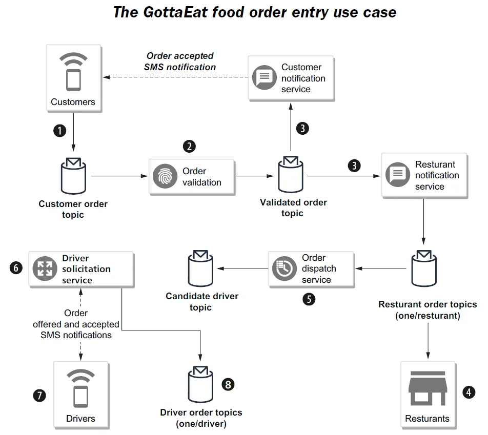

Customers submit their orders using the company website or mobile application.
客户通过公司网站或移动应用提交他们的订单。
An order validation service subscribes to the customer order topic and validates the order, including taking the provided payment information.
一个订单校验服务订阅客户订单主题，并对该订单进行校验，其中包括取得其所提供的支付信息。
Orders that are validated get published to the validated order topic and are consumed by both the customer notification service (e.g., sends an SMS message to the customer, confirming the order was placed on the mobile app) and the restaurant notification service that publishes the order into the individual restaurant order topic.
通过校验的订单会被发布到已校验订单主题，并被两方消费：一是客户通知服务（例如向客户发送一条短信，确认订单已在移动应用上下达），二是餐厅通知服务——它把该订单发布到对应餐厅自己的订单主题中。
The restaurants review the incoming orders from their topic, update the status of the order from “new” to “accepted” and provide a pickup time window of when they feel the food will be ready.
各家餐厅从自己的主题中查阅 incoming 的订单，把订单状态从"新订单"更新为"已接单"，并给出一个取餐时间窗口，说明他们认为餐品何时会准备好。
The order dispatcher service is responsible for assigning the accepted orders to drivers.
订单派发服务负责把那些已接单的订单指派给各位司机。
The driver solicitation service pushes a notification to each of the drivers in the list, offering them the order. When one of the drivers accepts the order, a notification is sent back to the solicitation service.
司机征召服务向名单中的每一位司机推送一条通知，把这笔订单提供给他们。当其中某位司机接受该订单时，就会有一条通知被回送给这个征召服务。